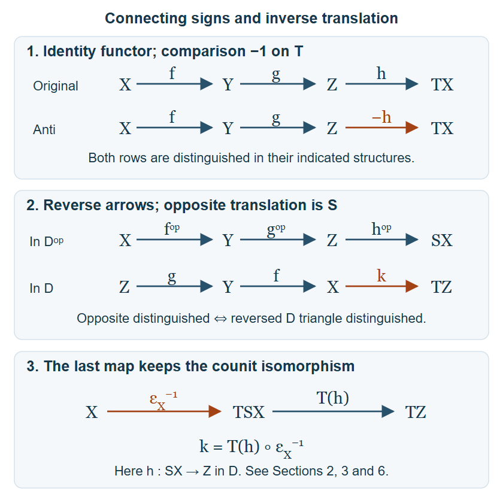

Draft lesson.
Connecting signs and opposite triangle structures
Original text public domain (CC0).
A triangle's connecting map carries part of its structure. Negating it changes the distinguished collection, while reversing arrows changes the translation to an inverse. We construct both triangle structures, prove every axiom with its prescribed maps, and track how a triangulated functor passes to the opposite category.
Use Translations, coherent powers and universal triangle comparisons, Sections 1–7, for the additive triangle definitions, chosen inverse data, full octahedral faces, sign comparisons and two-vertex comparison theorem. Write the translation as \(T\), its chosen quasi-inverse as \(S\), its counit as \(\epsilon: TS\to1\), and its unit as \(\eta:1\to ST\). Both triangle identities hold. We use the ambient universe and Choice convention of that lesson. Composition is right to left.
1. Two explicit rotation comparisons
Let a triangle in D be
\[ A\xrightarrow a B\xrightarrow b C\xrightarrow c TA. \tag{1.1} \]Its actual inverse rotation is
\[ SC\xrightarrow{-\eta_A^{-1}S(c)}A \xrightarrow aB\xrightarrow{\epsilon_C^{-1}b}TSC. \tag{1.2} \]Rotate (1.2) once. The comparison to (1.1) has vertex maps \((1_A,1_B,\epsilon_C)\). Its middle square is \(\epsilon_C\epsilon_C^{-1}b=b\). For its last square, the triangle identity gives \(T\eta_A^{-1}=\epsilon_{TA}\), and counit naturality gives
\[ -T(-\eta_A^{-1}S(c)) =\epsilon_{TA}TS(c)=c\epsilon_C. \tag{1.3} \]The first square is the identity square. Thus the rotated triangle is isomorphic to (1.1) with all three squares. The rotation axiom, in both directions, proves that (1.2) is distinguished exactly when (1.1) is.
Three rotations of (1.1) have vertices \(TA,TB,TC\) and arrows \(-Ta,-Tb,-Tc\). Vertex maps \((1_{TA},-1_{TB},1_{TC})\) identify that triangle with
\[ TA\xrightarrow{Ta}TB\xrightarrow{Tb}TC \xrightarrow{-Tc}T^2A. \tag{1.4} \]Consequently (1.4) is distinguished exactly when (1.1) is. This is a direct three-rotation comparison, and includes reflection of distinguishedness; it does not assume that T is a strict automorphism.
2. Negating the connecting map gives another triangle structure
Call \((X,Y,Z,f,g,h)\) anti-distinguished when \((X,Y,Z,f,g,-h)\) is distinguished in the original structure.
Isomorphism closure follows because the last triangle-morphism equation is unchanged when both connecting maps are negated. The identity triangle keeps a zero connecting map. Completing an arrow in the original structure and negating its connecting map supplies an anti-distinguished completion.
For rotation, the original triangle corresponding to an anti-distinguished triangle is \((f,g,-h)\). Its original rotation has arrows \((g,-h,-Tf)\). The original triangle corresponding to the desired anti-rotation has arrows \((g,h,Tf)\). They are isomorphic with vertex maps \((1_Y,1_Z,-1_{TX})\): the first square is unchanged, the second negates both occurrences of h, and the last negates both occurrences of Tf. The same comparison and the original rotation equivalence prove both directions of the anti-rotation axiom.
For completion of a square, apply the original axiom to the two triangles with their connecting maps negated. The completed third map obeys
\[ T(a)(-h)=(-h')c, \tag{2.1} \]which is precisely the required last square after canceling the additive minus signs. The other two squares are unchanged.
For the full octahedron, prescribe anti-distinguished completions of f, g and gf, with maps \(j_f,d_f,j_g,d_g,j_{gf},d_{gf}\). The corresponding original triangles have connecting maps \(-d_f,-d_g,-d_{gf}\). Their original octahedron supplies maps u and v. Its fourth distinguished triangle has connecting map
\[ (Tj_f)(-d_g)=-(Tj_f)d_g. \tag{2.2} \]Thus its anti counterpart is exactly the required fourth triangle with connecting map \((Tj_f)d_g\). The four faces are
\[ uj_f=j_{gf}g,\quad (-d_{gf})u=-d_f, \quad vj_{gf}=j_g,\quad (-d_g)v=(Tf)(-d_{gf}). \tag{2.3} \]Removing the common minus signs gives every prescribed anti face. This proves the entire octahedral axiom for the originally specified triangles, rather than only for newly chosen representatives.
The identity functor from the original structure to the anti structure is triangulated when its translation comparison is \(-1_T\). It takes the last map h to -h, which is anti-distinguished by definition. The same identity functor with the same negative comparison is an inverse. Their composite comparison is \((-1_T)(-1_T)=1_T\), so these are inverse triangulated equivalences with the specified comparison data.
3. The opposite translation and its complete triangle definition
The opposite category has the same abelian groups of maps with objects reversed. Reversed composition remains bilinear. Finite biproducts remain biproducts after interchanging inclusions and projections. The functor S, with arrows reversed, is therefore an additive translation equivalence of \(D^{\mathrm{op}}\).
Describe an opposite triangle without suppressing the direction reversal:
\[ X\xrightarrow{f^{\mathrm{op}}}Y \xrightarrow{g^{\mathrm{op}}}Z \xrightarrow{h^{\mathrm{op}}}SX, \qquad f:Y\to X,\quad g:Z\to Y,\quad h:SX\to Z \quad\hbox{in }D. \tag{3.1} \]Define it to be distinguished exactly when the following triangle in D is distinguished:
\[ Z\xrightarrow gY\xrightarrow fX \xrightarrow kTZ, \qquad k=T(h)\epsilon_X^{-1}. \tag{3.2} \]The counit inverse is essential for the type \(X\to TZ\); writing only T(h) would start at TSX.

The top panel records the negative translation comparison from Section 2. The middle panel displays the exact opposite definition (3.1)–(3.2). The bottom panel separates the two factors of the reverse connecting map; its counit arrow is an isomorphism, not an equality of objects. The full opposite octahedron in Section 6 uses this same composition.
A morphism from (3.1) to its primed version consists, in D, of maps \(a:X'\to X\), \(b:Y'\to Y\), \(c:Z'\to Z\) satisfying
\[ fb=af',\qquad gc=bg',\qquad hS(a)=ch'. \tag{3.3} \]These correspond to a reversed triangle morphism from the primed (3.2) to the unprimed (3.2), with vertex maps \((c,b,a)\). For the last square, naturality of ε gives
\[ ka=T(h)\epsilon_X^{-1}a =T(hS(a))\epsilon_{X'}^{-1} =T(c)k'. \tag{3.4} \]Conversely (3.4), after substituting k and k', canceling \(\epsilon_{X'}^{-1}\), and using faithfulness of T, gives the last equation of (3.3). Thus this is an exact correspondence of complete morphisms, including invertible ones.
4. The identity, existence and rotation axioms in the opposite category
Isomorphism closure follows from (3.3)–(3.4). The opposite identity triangle reverses to \(0\to X\xrightarrow1X\to T0\), which is a distinguished inverse rotation of an identity triangle, with its zero-object comparison.
For existence, let \(f:Y\to X\) in D represent the desired opposite arrow. Choose an original distinguished completion
\[ Y\xrightarrow fX\xrightarrow jQ\xrightarrow dTY. \tag{4.1} \]Set
\[ Z=SQ,\qquad g=-\eta_Y^{-1}S(d):SQ\to Y, \qquad h=S(j):SX\to SQ. \tag{4.2} \]Counit naturality gives \(T(h)\epsilon_X^{-1}=\epsilon_Q^{-1}j\). The reverse triangle (3.2) is therefore precisely the inverse rotation (1.2) of (4.1). It is distinguished, proving opposite completion with the complete last map.
Rotate (3.1) by the standard opposite convention. In D its three reverse arrows are g, h and \(-S(f)\). Its reverse triangle, now starting at SX, is
\[ SX\xrightarrow hZ\xrightarrow gY \xrightarrow{-\epsilon_X^{-1}f}TSX. \tag{4.3} \]Indeed its last map is \(-TS(f)\epsilon_Y^{-1}=-\epsilon_X^{-1}f\) by naturality.
The inverse rotation of (3.2) has first map \(-\eta_Z^{-1}S(k)\). Substituting k, unit naturality and the second triangle identity give
\[ \eta_Z^{-1}S(k) =\eta_Z^{-1}ST(h)S(\epsilon_X^{-1}) =h\eta_{SX}^{-1}S(\epsilon_X^{-1}) =h. \tag{4.4} \]That inverse rotation consequently has arrows \((-h,g,\epsilon_X^{-1}f)\). Changing its first and last signs, with vertex maps \((1_{SX},-1_Z,-1_Y)\), gives (4.3). The inverse-rotation equivalence in Section 1 proves both directions of opposite rotation.
5. Completing the opposite square
Suppose a and b in (3.3) are prescribed with \(fb=af'\). Rotate both reverse distinguished triangles (3.2) once. Their first two vertices are \(Y',X'\) and \(Y,X\), with first maps f' and f. The prescribed pair \((b,a)\) commutes with those first maps. Original triangle completion supplies \(q:TZ'\to TZ\).
Full faithfulness of T gives a unique \(c:Z'\to Z\) with \(T(c)=q\). The last square of the rotated completion says
\[ T(b)(-Tg')=(-Tg)T(c), \tag{5.1} \]so faithfulness gives \(bg'=gc\). Its middle square says \(ka=T(c)k'\), which is equivalent by (3.4) to \(hS(a)=ch'\). Hence c completes all the opposite triangle squares. No opposite completion theorem was assumed in constructing it.
6. The full opposite octahedron
Prescribe the three opposite distinguished triangles of the composable arrows \(f^{\mathrm{op}}:X\to Y\) and \(g^{\mathrm{op}}:Y\to Z\). In D they have maps
\[ \begin{gathered} f:Y\to X,\quad j_f:Q_f\to Y,\quad d_f:SX\to Q_f,\\ g:Z\to Y,\quad j_g:Q_g\to Z,\quad d_g:SY\to Q_g,\\ fg:Z\to X,\quad j_{fg}:Q_{fg}\to Z,\quad d_{fg}:SX\to Q_{fg}. \end{gathered} \tag{6.1} \]Their reverse triangles are distinguished by definition. Put
\[ k_f=T(d_f)\epsilon_X^{-1},\qquad k_g=T(d_g)\epsilon_Y^{-1},\qquad k_{fg}=T(d_{fg})\epsilon_X^{-1}. \tag{6.2} \]Rotate those reverse triangles once. These are the three prescribed original completions of g, f and fg:
\[ \begin{gathered} Z\xrightarrow gY\xrightarrow{k_g}TQ_g\xrightarrow{-Tj_g}TZ,\\ Y\xrightarrow fX\xrightarrow{k_f}TQ_f\xrightarrow{-Tj_f}TY,\\ Z\xrightarrow{fg}X\xrightarrow{k_{fg}}TQ_{fg}\xrightarrow{-Tj_{fg}}TZ. \end{gathered} \tag{6.3} \]Apply the original octahedral axiom to g followed by f and these actual completions. It gives maps
\[ v_T:TQ_g\to TQ_{fg},\qquad u_T:TQ_{fg}\to TQ_f, \tag{6.4} \]and a distinguished fourth triangle with connecting map \(-(Tk_g)(Tj_f)=-T(k_gj_f)\). Lift the maps uniquely through full faithfulness of T to \(v:Q_g\to Q_{fg}\) and \(u:Q_{fg}\to Q_f\). By the equivalence (1.4), its fourth distinguished triangle is the translated form of the distinguished triangle
\[ Q_g\xrightarrow vQ_{fg}\xrightarrow uQ_f \xrightarrow{k_gj_f}TQ_g. \tag{6.5} \]Its four faces, before canceling the translates, are
\[ v_Tk_g=k_{fg}f,\quad (-Tj_{fg})v_T=-Tj_g, \quad u_Tk_{fg}=k_f,\quad (-Tj_f)u_T=(Tg)(-Tj_{fg}). \tag{6.6} \]Substitute (6.2), use counit naturality in the first equation, cancel counit inverses, and use faithfulness of T. They become
\[ v d_g=d_{fg}S(f),\qquad j_{fg}v=j_g, \qquad u d_{fg}=d_f,\qquad j_fu=g j_{fg}. \tag{6.7} \]These are exactly all the required opposite octahedron faces for \(u^{\mathrm{op}}:Q_f\to Q_{fg}\) and \(v^{\mathrm{op}}:Q_{fg}\to Q_g\).
The required opposite fourth connecting arrow is \(S(j_f^{\mathrm{op}})d_g^{\mathrm{op}}\), whose D arrow is \(w=d_gS(j_f):SQ_f\to Q_g\). Its reverse connecting arrow is
\[ T(w)\epsilon_{Q_f}^{-1} =T(d_g)TS(j_f)\epsilon_{Q_f}^{-1} =T(d_g)\epsilon_Y^{-1}j_f=k_gj_f. \tag{6.8} \]Thus its reverse triangle is exactly (6.5). It is distinguished by the preceding octahedron and three-rotation comparison. This proves the full opposite octahedral axiom with its prescribed fourth connecting arrow, for all the three initially supplied triangles.
The opposite category with translation \(S\) and definition (3.2) is therefore triangulated. Every inverse comparison used in this argument retains the specified counit and unit.
7. Two examples that reveal the structure
Example 7.1 (the comparison on an identity functor matters). Work in \(K^b(\mathsf{Ab})\) with \(Y=\mathbb Z[0]\) and the cone \(C_3\) of multiplication by three. The full integer-cone computation proves
\[ Y\xrightarrow3Y\xrightarrow jC_3\xrightarrow pY[1] \tag{7.1} \]is distinguished, and that replacing only \(p\) by \(-p\) gives no isomorphic triangle. Here is how this tests the two structures. If the only-last-negative triangle were distinguished in the original structure, completing the identity square on its first arrow and using the two-vertex comparison theorem would make it isomorphic to (7.1). This contradicts the explicit computation: endpoint units \(a,b=\pm1\) and a cone unit \(c\in(\mathbb Z/3)^\times\) would have to obey \(a=b\), \(c\equiv b\), \(a\equiv-c\), hence \(2a\equiv0\pmod3\). Thus (7.1) itself is not anti-distinguished. An identity functor between the original and anti structures requires its negative translation comparison; identity on the underlying category alone does not suffice.
Example 7.2 (a variance check after reversing the category). Fix an object \(W\). The covariant representable on the opposite category has values
\[ \operatorname{Hom}_{D^{\mathrm{op}}}(W,X) =\operatorname{Hom}_D(X,W). \tag{7.2} \]An arrow \(f^{\mathrm{op}}:X\to Y\) sends a map \(X\to W\) to its composite with \(f:Y\to X\). For an opposite distinguished triangle, its image at the first three positions is therefore
\[ \operatorname{Hom}_D(X,W)\xrightarrow{f^*} \operatorname{Hom}_D(Y,W)\xrightarrow{g^*} \operatorname{Hom}_D(Z,W). \tag{7.3} \]The reverse triangle (3.2) is distinguished in \(D\). Its contravariant Hom sequence is exactly (7.3), so is middle exact by the complete generic Hom proof. Opposite rotation now gives every shifted position. This identifies both the functor variance and the actual arrow action; no implicit strict inverse translation is needed.
8. Four graded exercises with complete solutions
Exercise 1 (basic: compose the two sign equivalences). Let \(I_-:D\to D_{\mathrm{ant}}\) and \(J_-:D_{\mathrm{ant}}\to D\) be the identity functors with negative translation comparison. Compute each composite comparison, and its image of a complete triangle. Explain, with an actual example, why replacing the comparison of \(I_-\) by the positive identity may fail.
Solution. The composite comparison is the first comparison followed by the second comparison whiskered by the identity functor. Both components are multiplication by minus one, so their composite is multiplication by plus one on \(TX\). The first application keeps the first two arrows and changes \(h\) to \(-h\); the second changes it back to \(h\). It therefore returns every original distinguished triangle with all maps intact. The same calculation on an anti-distinguished triangle returns that triangle and the identity comparison on its translation. The identity natural transformations consequently give the two inverse equivalence equations. In Example 7.1, a positive comparison would send (7.1) to itself. That triangle is not anti-distinguished by the integer-three calculation there. Thus the positive identity functor fails the actual preservation condition.
Exercise 2 (intermediate: change the inverse normalization). Suppose \(D\) is a triangulated category linear over a field, \(T,S\) are strictly inverse as functors, and multiplication by a scalar commutes with every functor used here. For \(\lambda\ne0\), choose
\[ \eta=\lambda1,\qquad\epsilon=\lambda^{-1}1. \tag{8.1} \]Compute the inverse rotation and the opposite reverse connecting map using this data. Compare this opposite triangle structure with the one defined using \(\lambda=1\), through an identity functor with a specified translation comparison. Check its inverse as well.
Solution. Both triangle identities are the product \(\lambda^{-1}\lambda=1\). Formula (1.2) becomes
\[ SC\xrightarrow{-\lambda^{-1}S(c)}A \xrightarrow aB\xrightarrow{\lambda b}C, \tag{8.2} \]where \(TSC=C\) under the strictly inverse convention. The two scalar factors are necessary for the comparison after rotation. Formula (3.2) gives \(k=\lambda T(h)\).
Take the identity functor from the opposite structure using \(\lambda\) to the opposite structure using one, with comparison \(\lambda1_S\) in the opposite category. The image connecting arrow, read in \(D\), is \(h\circ(\lambda1_{SX})=\lambda h\): reversing the composition places this comparison before h in \(D\). Its reverse connecting arrow for the target normalization is \(T(\lambda h)=\lambda T(h)\), exactly the original reverse connecting arrow. Both other arrows and all vertices agree. Thus it preserves every distinguished triangle and is a triangulated functor. It is additive and its comparison is a natural isomorphism by the linearity and scalar-commutation hypotheses. In the other direction use comparison \(\lambda^{-1}1_S\). The same equation proves preservation. The composite comparisons are identity maps because their scalars multiply to one. These are inverse triangulated equivalences. Different inverse normalizations can give different displayed connecting maps without changing the equivalence class of the structured category.
Exercise 3 (advanced: write the opposite integer cone). Use the strict shifts \(T=[1]\), \(S=[-1]\) and their identity unit/counit in \(K^b(\mathsf{Ab})\). Starting with (7.1), give the opposite distinguished completion of the arrow \(3^{\mathrm{op}}:Y\to Y\). Specify the new third complex in degrees, its differential and both its other arrows as maps in \(D\). Compute the reverse original triangle and its entire cohomology sequence.
Solution. Formula (4.2) gives third object \(Z=C_3[-1]\), first reverse arrow \(g=-p[-1]:Z\to Y\), and last reverse arrow \(h=j[-1]:Y[-1]\to Z\). The complex Z has \(\mathbb Z\) in degrees zero and one and differential \(-3\). The shift \(Y[-1]\) has \(\mathbb Z\) only in degree one. Thus g is multiplication by minus one in degree zero and zero in degree one. The map h is the identity in degree one, with all other components zero. These are chain maps: the outgoing differential from the degree-one term is zero, and g sends the degree-one target of the differential to zero. The opposite triangle is
\[ Y\xrightarrow{3^{\mathrm{op}}}Y \xrightarrow{(-p[-1])^{\mathrm{op}}}C_3[-1] \xrightarrow{(j[-1])^{\mathrm{op}}}Y[-1]. \tag{8.3} \]Its reverse connecting map is \(T(h)=j\), so its reverse original triangle is
\[ C_3[-1]\xrightarrow{-p[-1]}Y\xrightarrow3Y \xrightarrow jC_3. \tag{8.4} \]It is exactly the inverse rotation of (7.1). The third complex Z has \(H^0Z=\ker(-3)=0\) and \(H^1Z=\mathbb Z/3\), with every other cohomology group zero. Both copies of Y have \(H^0Y=\mathbb Z\) and other groups zero. The only nonzero part of the long exact sequence of (8.4) is
\[ 0\longrightarrow\mathbb Z\xrightarrow3\mathbb Z \xrightarrow{\bmod3}\mathbb Z/3\longrightarrow0. \tag{8.5} \]The reduction map is induced by the actual cone inclusion j. Multiplication by three is injective and its image is exactly the kernel of reduction; reduction is surjective. Every preceding and following group is zero, including the adjacent groups in all other degrees. This checks the full sequence and the shifted differential and connecting signs.
Exercise 4 (synthesis: transport a general triangulated functor). Let \((F,\xi):(D,T)\to(E,U)\) be triangulated, with \(\xi:FT\to UF\). Choose inverse data \((S,\eta^D,\epsilon^D)\) and \((V,\eta^E,\epsilon^E)\) in the two categories. Construct the translation comparison that makes \(F^{\mathrm{op}}\) triangulated for the opposite structures of Section 3. Prove naturality, invertibility and preservation of the complete connecting arrow, without identifying an inverse composite with the identity functor.
Solution. Full faithfulness of U gives a unique map \(\psi_X:FSX\to VFX\) with
\[ U(\psi_X) =(\epsilon^E_{FX})^{-1}F(\epsilon^D_X)\xi_{SX}^{-1}. \tag{8.6} \]The right side starts at \(UFSX\) and ends at \(UVFX\), so both are in the image of U, as required for lifting. It is invertible. Lift its inverse through fullness and apply faithfulness to both inverse equations; this makes \(\psi_X\) invertible. Naturality of \(\epsilon^E,\epsilon^D,\xi\) gives the naturality square of the right side for every \(t:X\to X'\). Faithfulness of U then gives \(\psi_{X'}FS(t)=VF(t)\psi_X\). Thus \(\psi:FS\to VF\) is a natural isomorphism.
In \(E^{\mathrm{op}}\), use the comparison represented by the E arrow \(q_X=\psi_X^{-1}:VFX\to FSX\). It has the required opposite type \(FSX\to VFX\). The functor \(F^{\mathrm{op}}\) is additive, since its maps on the opposite Hom groups are the same group homomorphisms as those of F.
For an opposite triangle as in (3.1), its image connecting arrow, read in E, is \(F(h)q_X\). Its reverse connecting arrow is consequently
\[ U(F(h))U(q_X)(\epsilon^E_{FX})^{-1}. \tag{8.7} \]Invert (8.6) to obtain
\[ U(q_X)(\epsilon^E_{FX})^{-1} =\xi_{SX}F((\epsilon^D_X)^{-1}). \tag{8.8} \]Naturality of ξ at \(h:SX\to Z\) gives \(UF(h)\xi_{SX}=\xi_ZFT(h)\). Substituting (8.8) into (8.7) therefore makes it
\[ \xi_ZF\bigl(T(h)(\epsilon^D_X)^{-1}\bigr). \tag{8.9} \]This is precisely the connecting arrow in F's image of the reverse original triangle (3.2). All three vertices and the other two arrows also agree. That image is distinguished in E because F is triangulated. By the opposite definition, the entire image triangle is distinguished in \(E^{\mathrm{op}}\). This proves that \(F^{\mathrm{op}}\), with the constructed comparison, is triangulated. Equation (8.8) exhibits the exact inverse/counit interface that an informal reversal would hide.
9. Freely accessible references
- The Stacks Project Authors, The definition of a triangulated category, for the complete triangle morphism, translation-compatible functor and prescribed octahedral conventions used here.
- The Stacks Project Authors, Elementary results on triangulated categories, for Hom exactness and morphisms of triangles. The course proofs are linked where they are used.